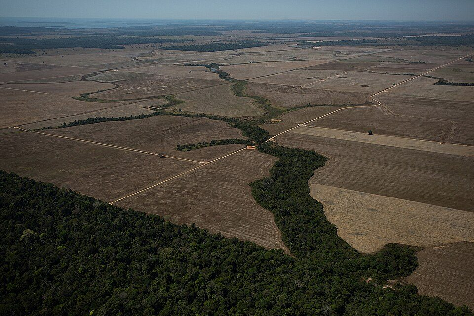

Deforestación y pérdida de hábitats
Por qué desaparecen los bosques, qué productos hay detrás, los incendios y los países que han conseguido recuperar sus árboles.

_(62)_(50224604772).jpg){kind=link}
Desde el final de la última glaciación, la humanidad ha eliminado alrededor de un tercio de los bosques del planeta, la mitad de ellos solo en el último siglo. Hoy se siguen perdiendo unos 10 millones de hectáreas de bosque al año, sobre todo en los trópicos: una superficie como la de Portugal.
Qué hay detrás
La mayor parte de la deforestación tropical se debe a la agricultura y la ganadería:
- Ganado vacuno: es la principal causa en la Amazonia, donde se queman bosques para crear pastos.
- Soja: la mayor parte se usa para pienso de animales, también en Europa.
- Aceite de palma: en Indonesia y Malasia, las plantaciones han sustituido enormes extensiones de selva, hogar de orangutanes.
- También el cacao, el café, la madera, el papel y la minería.
Desde 2024, la Unión Europea exige que productos como el café, el cacao, la soja, la carne o el aceite de palma que se venden en Europa no procedan de tierras deforestadas.
La pérdida de hábitats, la mayor amenaza
Según la ONU, la destrucción de hábitats es la principal causa de la pérdida de biodiversidad, por delante del cambio climático. Cuando un bosque se corta en trozos, sus animales quedan aislados en «islas» demasiado pequeñas. A ello se suman las especies invasoras, llevadas por el ser humano a lugares donde no tienen enemigos: el mejillón cebra en el Ebro, el cangrejo rojo americano o el camalote en el Guadiana.
Incendios
Los incendios forestales forman parte de la naturaleza en muchos ecosistemas, como el mediterráneo, pero el cambio climático y el abandono del campo los hacen más grandes y peligrosos. En 2025 España sufrió una de sus peores temporadas de incendios, con más de 350.000 hectáreas quemadas, sobre todo en Galicia, Castilla y León y Extremadura.
Los expertos repiten que los incendios se apagan en invierno: limpiando el monte, recuperando el pastoreo y creando paisajes en mosaico con cultivos que frenen el fuego.
Buenas noticias: los bosques vuelven
- La deforestación en la Amazonia brasileña bajó a la mitad entre 2022 y 2024.
- Costa Rica pasó de tener un 21 % de bosque en 1987 a más de un 50 % hoy, pagando a los propietarios por conservarlo.
- En Europa, incluida España, la superficie de bosque crece desde hace décadas.
- La Gran Muralla Verde de África pretende restaurar 100 millones de hectáreas a lo largo del Sahel, de Senegal a Yibuti, aunque avanza más despacio de lo previsto.
Vídeos para entenderlo mejor
- LA DEFORESTACIÓN | Maneras de cuidar del Medio Ambiente | Happy Learning ♻️🌴🐒Happy Learning Español · 129 mil visualizaciones
- ¿Explotar la selva amazónica o salvarla de la deforestación?BBC News Mundo · 58 mil visualizaciones
Los vídeos son de YouTube y de sus autores. Se cargan solo al pulsar sobre ellos. Ver todos los vídeos →